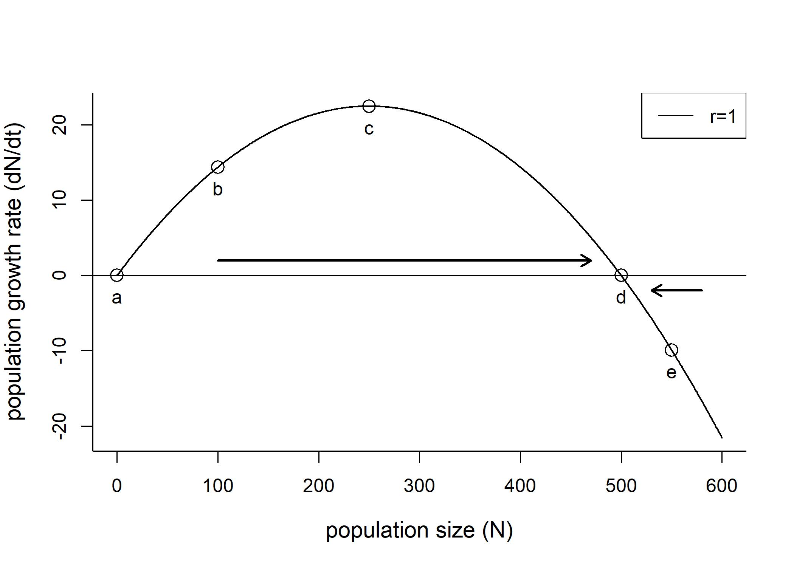
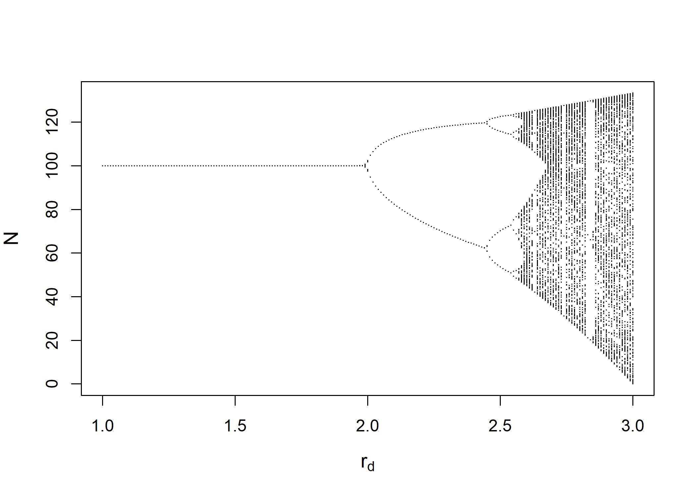
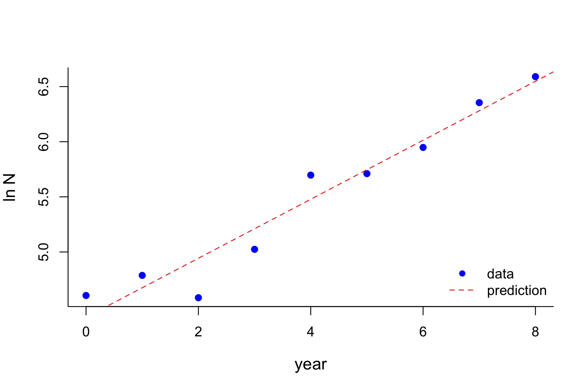

Module 1: Unstructured Population Models
Introduction
This module covers the most simple models to predict the dynamics of populations, such as exponential models. Next, stochasticity, or random effects, is approached as affecting population dynamics. Then, density-dependency is introduced as a phenomena that takes place when the amount of individuals present in a given population interferes with the growth rate of that population. Lastly, you will learn techniques to compare models to data and perform model assessment.
Learning outcomes
- Develop practical skills to independently run a model using your own data based on relevant theory and codes
- Assess the results of population models to analyze a problem of your interest
- Distinguish and compare several models and select the most appropriate model according to the life history of organisms and available data
What is a population model?
A population model consists of mathematical equations (eg., exponential and logistic) which represent patterns of growth, reduction, or stabilization of a given population.
Basic types of population models
Unstructured population model: This model does not distinguish individuals counted as part of a given population.
Structured population model: In this type of model, individuals are categorized (eg., by age) and then counted.
Density-independent model: In more simple population models, the amount of individuals present at a given time do not interfere with reproduction success.
Density-dependent model: This model considers that the growth rate of a given population depends on the amount of individuals living at a given time.
Simple models of population dynamics
Historical facts
In 1798, Thomas Malthus published An Essay on the Principle of Population (Malthus, 1798). This work distinguished arithmetic and geometric growth, with human populations characterized by a geometric (or exponential; the difference between them will be covered soon) growth while food resources were restricted to an arithmetic pattern of growth.

{kind=link}
Let’s plot an illustration to differentiate both types of growth:
# Generate random numbers from an uniform distribution (runif(n, min, max))
x <- runif(50,2,8)
# Plot hypothetical exponential and linear growth patterns
plot(x,exp(x), lty=1, col = "blue", main="Hypothetical example of exponential versus arithmetic growth", xlab="time",
ylab="population or resources")
points(x,50+(40*x),col="red")
legend(2.2, 2400, legend=c("Exponential population growth", "Arithmetic growth of resources available"),
col=c("blue", "red"), cex=0.8, pch=c(21,1))The main difference between these two types of growth is that an arithmetic growth is characterized by the addition or subtraction of a fixed value (eg. we added “50” in our linear growth example above, which could represent agricultural yields, for instance).
Meanwhile, geometric and exponential growths are multiplicative processes in which a fixed rate of change is applied to population sizes at all time steps.
When are simple population models used in biological analyses?
Now let’s see when simple models such as the exponential growth model are used in biology. Are there real situations where an uncontrolled growth can be understood through such models? In some situations, we can disregard factors which limit the growth of populations, such as resource availability, interactions between species, and relocation of individuals. Here are some examples:
- Experimental settings: In lab conditions, we remove as many factors as possible which could potentially interfere with the growth of our model species, so that we can focus on understanding the effects of our selected explanatory variables during experiments. In our lab, we work with duckweeds, a group of small aquatic plant species. In the photos below, you can see the difference between natural and lab conditions. In lab settings, duckweeds can achieve unlimited growth which can be modelled by exponential growth models. This is because a single species is selected and sterilized, eliminating potential sources of disease and all of the competition naturally seen between duckweed species (different sizes of fronds - leaf-like shapes - represent different duckweed species), and with other species, such as algae. In labs, other factors are also controlled to provide optimal conditions, such as light, nutrition, and temperature.

- Expanding invasive species: Following the introduction of an invasive species, its spread is enabled by an exponential population growth (Shigesada & Kawasaki, 1997) due to the availability of resources and/or absence of natural enemies. Spotted knapweeds (Centaurea nigra), for example, were accidentally introduced to North America in the 1980s with agricultural seeds and soil discarded from ship ballast from Eurasia. This species is considered problematic because it quickly replaces livestock pasture and reduces biodiversity in affected sites (Minnesota Department of Agriculture, 2023). A modelling study considering the life history of knapweeds found that exponential growth following the introduction of invading populations can be observed for about 2 years (Jacobs & Sheley, 1998). Thus, exponential models are useful for modelling the behaviour of invading species.

{kind=link}
- Management of species at risk of extinction: Well-managed species will have little limitation to growth due to abundant resources and small population sizes, resulting in exponential growth rates. This was observed following management strategies to recover endangered crane populations in both North America and Japan. Whooping cranes (Grus americana) are the largest North American birds which became severely endangered with a population of 21 birds in 1952, as well as the red-crowned crane of Hokkaido (Grus japonensis) in Japan, with 33 individuals at this same year. Since then, management efforts such as federal protection and creating wildlife refuges ensured an exponential growth of bird populations, which by 2020 achieved 506 individuals in North America and 1,900 in Japan. The much faster rate at which Japanese cranes are growing is attributed to an additional management strategy consisting of artificially feeding birds during periods of food scarcity which was not implemented in North America (Gronewold, 2021).

{kind=link}
Mathematical representation of population growth patterns
Total population considers:
Births (B)
Deaths (D)
Relocations (immigrations [I] and emigrations [E])
Mathematical representation: \[N(tomorrow) = N(today) + B - D + I - E\]
Where: N(tomorrow): number of individuals in the future (also called “abundance”) N(today): present number of individuals B: births D: deaths I: immigration E: emigration
Geometric growth
What is geometric growth?
Geometric growth is a multiplicative process. Simple singled-cell organisms have reproduction processes which result in a geometric population growth: 1 cell divides resulting in 2 cells, 2 cells divide resulting in 4, etc. In this case, the rate of change is equivalent to 2 (each cell divides into two each time). Geometric growth occurs in a discrete time scale, which means that reproduction events occur periodically in time. Annual plants, for example, can be modelled using geometric growth models.
Mathematical equation to predict future population sizes
If we assume that the number of births and and deaths is proportional to the current population size, and our population is isolated, we can write:
\[N_{(t+1)}=N_{t}(b_{t}-d_{t})\]
Where: N(t+1): number of individuals in the future Nt: number of individuals at time t bt: per capita birth rate dt: per capita death rate
Working with generation times: Net reproductive rate
R0 (pronounced as “R-naught”) is the net reproductive rate which represents the average offspring per individual within a given generation:
\[R_{0}=b_{t}-d_{t}\]
Thus, future population sizes can be calculated by:
\[N_{(t+1)}=N_{t}*R_0\]
# Let's practice: considering that an initial population of 100 individuals and a net
# reproductive rate of 1.5, what will be the total population size
# in 4 generations?
Ninitial <- 1000
R0 <- 1.2
# The net reproductive rate is multiplied several times to represent each of the 4 generations:
Nfuture <- (Ninitial*R0)*R0*R0*R0
Nfuture## [1] 2073.6Thus, for calculating population sizes at any generation, we have:
\[N_{t}=N_{0}*(R_0)^t\]
From generation time to calendar time: Lambda (\(\lambda\)) geometric growth rate
If we assume birth rates and death rates are constant through time, we are left with:
\[N_{t+1}=N_{t}*(b-d)\]
We can rename this net rate, \(\lambda\), to obtain
\[N_{t+1}=N_{t}*\lambda\]
Lambda (\(\lambda\)) is the rate of population change in units of time. The abundance in the next time step is a proportion of the current abundance.
\(\lambda\) = 1: stationary (no changes in population growth)
\(\lambda\) 1: population is growing
\(\lambda\) < 1: population is shrinking
\(\lambda\) and proportional population changes
lambda=1.45
#We can calculate how much a population will change in the next time step (eg., next year):
percentage_of_change=(lambda-1)*100## [1] 45\(\lambda\) for calculating future population size
The abundance of a population depends on the current population and on the \(\lambda\) rate:
\[N_{t+1}=N_{t}\lambda\]
Where: N(t+1): population size in the future time Nt: current population size \(\lambda\): lambda growth rate (discrete or geometric)
Obtaining \(\lambda\) from population sizes at different time points
Rearranging this last equation, we have:
\[\lambda=N_{t+1}/N_{t}\]
- Example using an annual plant
# We take note of the population growth of a given annual plant at different time periods:
year1 <- 74
year0 <- 35
# Applying the equation above we get the lambda growth rate over the first year period:
lambda <- year1/year0
lambda## [1] 2.114286Simplifying the future population growth calculation
For several time steps with growth occurring at the same \(\lambda\) rate, \(\lambda\) would be continuously multiplied by itself (in the same fashion as R0), so we have:
\[N_{t}=N_{0}\lambda^t\]
Missing data for certain time periods: Average \(\lambda\) calculation
When we do not have data for calculating all \(\lambda\) over several time periods, we can rearrange the equation we just saw and consider the latest time period available and the first time period:
\[\lambda=(N_{t}/N_{0})^{1/t}\]
# Here are population numbers for a given plant species at year 2 and year 0:
year2 <- 173
year0 <- 35
# The average yearly lambda is:
lambda <- (year2/year0)^(1/2)Exponential growth
What is exponential growth
For populations which do not reproduce seasonally, an irrestricted growth can be projected using the exponential growth model. Instead of the \(\lambda\) rate, the instantaneous per capita growth rate (r) is used to represent a constant percentage increase over a continuous time scale. This rate is also useful to compare populations with different intervals of growth.
How to calculate the exponential growth rate
Using calculus, very small changes in abundance over time can be obtained by the derivative:
\[dN/dt=rN\] Where: dN = very small change in abundance dt = very small change in time N = present abundance r = per capita growth rate
Abundance over time in a logarithmic scale
If represented in a logarithmic scale, the curve line becomes a straight line, and the slope of the line corresponds to r.
Converting between \(\lambda\) and r
The natural logarithm of \(\lambda\) corresponds to r:
\[r=ln\lambda\] or
\[\lambda=e^r\]
While \(\lambda\) values greater than 1 represent growing populations, r values greater than 0 correspond to population increases in size.
Example using duckweeds
Remember our duckweeds? Due to their fast and asexual growth, they are good model species for population ecology studies. Duckweed population growth can be calculated in a number of ways, such as counting individual fronds (leaf like shape) or measuring the dry weight of specimens. Try to count how many individuals are found in each date in the picture below. Any round-shaped protuberance can be considered as a separate individual.

# Let's create a dataframe using the duckweed population counts we have just obtained
# from the picture above:
duckweed <- data.frame(day=(c(1,3,5,7,9,11)),pop_size=(c(9,12,23,45,68,103)))
# Now, let's calculate the average daily $\lambda$:
lambda <- (duckweed[6, "pop_size"]/duckweed[1, "pop_size"])^(1/(duckweed[6, "day"]-duckweed[1, "day"]))The average daily lambda is 1.28.
# And the r
r<-log(lambda)The intrinsic rate of increase is 0.24. This means that our duckweed populations are growing at an average daily rate of 24.38%.
# And here we simulate the growth of duckweeds over a 40-day period
N0 <- duckweed$pop_size[1]; t <- 1:40
cont.mat <- sapply(r, function(ri) N0 * exp(ri * t))
matplot(t, cont.mat, type = "l", col = 1,
main="Exponential model projecting duckweed population growth",
xlab="days", ylab="population size (number of individuals)")
points(duckweed$day, duckweed$pop_size,pch=15,col="red")
legend(1995, 1300, legend=c("Observed data", "Model predictions"),
col=c("red", "black"), cex=0.8, lty= c(NA,1), pch=c(15,NA))
Simplifying the exponential growth calculation
Due to the ability to replace \(\lambda\) for r and vice-versa, we have:
\[N_{t}=N_{0}e^{rt}\]
Doubling time
If we need to know how much time it would take for a population to achieve twice as much its initial size, we replace N(final)/N(initial) with 2 in our exponential growth equation. We then take the natural logarithm from both sides of the equation to solve, resulting in:
\[t_{double}=0.69/r\]
# We can use this equation to calculate the doubling time for our experimental duckweeds:
double <- 0.69/rThe doubling time for our duckweeds is 2.83 days.
Illustration of current application
Ecosystem effects of the world’s largest invasive animal (Shurin et al., 2020). This research paper discusses population dynamics of invasive hippos in Colombia.
Snapshot of the study
An invasive population of hippopotamus (Hippopotamus amphibus) is showing an exponential growth in Colombia
These large mammals were brought from Africa to the famous drug trafficker Carlos Scobar’s private zoo about 25 years ago
Following Scobar’s death, the then abandoned animals started spreading in the region, going from 4 to 65 individuals in 25 years
Hippos are considered as ecosystem engineers because they modify ecosystems by grazing on land and defecating in water bodies, thereby fertilizing aquatic systems
The growth of this invasive population appears to be in an exponential phase, with numbers achieving thousands in the following decades if no control measures are taken or without density-dependent regulation (to be introduced in the following module)
This study analyzed aquatic and terrestrial areas populated by hippos to conclude that this invasive species is substantially changing the environment by relocating nutrients from the soil to the water, resulting in cyanobacteria blooms. Continued unrestricted hippo population growth can then lead to water resource damage.
Constrains to management: Actions to manage this invasive species are complicated by the social-ecological mismatch between the scientific consensus on the ecosystem threats posed by this invasion and the public perception of the presence of hippos as being positive (eg., animal used for touristic purposes)

{kind=link}
Calculating the population growth of invasive hippos
# First, let's create a data frame containing dates and respective population counts
# as in Shurin (2020). We added additional records obtained from news outlets:
hippo <- data.frame(year=c(1993, 2009, 2014, 2019, 2022),pop_size=(c(4, 28, 60, 65, 133)))
# source for 2009: Romero (2009)
# source for 2014: Kremer (2014)
# source for 2022: Varona (2022)
plot(hippo$year, hippo$pop_size, type="o", pch=15, col="red",
main="Invasive hippo population growth over time in Colombia",
xlab="years", ylab="population size (number of individuals)")# Now, let's calculate the average yearly $\lambda$:
lambda <- (hippo[5, "pop_size"]/hippo[1, "pop_size"])^(1/(hippo[5, "year"]-hippo[1, "year"]))The average yearly lambda is 1.13.
# By taking the natural logarithm, we convert $\lambda$ to r
r<-log(lambda)The intrinsic rate of increase is 0.12. This means that this invasive hippo population is growing at an average yearly rate of 12.08”%.
# To predict population sizes, we first set our initial population size
initial<-hippo$pop_size[1]
# And we create an empty vector in which we will later include population sizes for the
# next 50 years
pred.pop.expon<-vector("numeric", 50)
# Our modelling starts with initially observed population sizes
pred.pop.expon[1]<-initial
# And we add a function to calculate population sizes according to our previously
# estimated growth rates
for(i in 2:50){
pred.pop.expon[i]<-pred.pop.expon[i-1]*lambda
}
# Adding a dataframe to include our predictions
hippo.model <- data.frame(year=c(1993:(1993+49)),pop_size=pred.pop.expon)
# And plotting predicitons and observed data
plot(hippo.model$year, hippo.model$pop_size,type="l",
main="Exponential growth model of invasive hippos in Colombia",
xlab="years", ylab="population size (number of individuals)")
points(hippo$year, hippo$pop_size,pch=15,col="red")
legend(1995, 1300, legend=c("oObserved data", "Model predictions"),
col=c("red", "black"), cex=0.8, lty= c(NA,1), pch=c(15,NA))This illustration demonstrates the utility of the exponential growth model for studying invading populations. Why do you think hippos are showing this uncontrolled growth?
Hippo invasion in Colombia: take-aways and future developments
The research found an annual per capita growth rate of 0.11 x yr^-1 for invasive hippos, which is comparable to population growth rates in the native range and indicates a potential for quick spread of this invasive species in the next decades. The growth rate we obtained above is slightly different because we took into account additional recent demography records. The lack of predators in both native and invasive ranges (Sinclair, Mduma, & Brashares, 2003; Castelblanco-Martínez et al., 2021) is a key factor enabling uncontrolled hippo population growth.
As a next step, refining population growth studies to include stage structure and age at maturity could help identifying useful management strategies, as there may be life history traits which are more relevant to population growth than others. For example, the population structure of hippos appears to be an important factor when predicting future invasion scenarios, as “half of those hippos are calves and juveniles, implying their reproductive rate will increase in the next three years” (Varona, 2022). You will learn about structured population models in the upcoming modules.
References
Castelblanco-Martínez, D. N., Moreno-Arias, R. A., Velasco, J. A., Moreno-Bernal, J. W., Restrepo, S., Noguera-Urbano, E. A., … & Jiménez, G. (2021). A hippo in the room: Predicting the persistence and dispersion of an invasive mega-vertebrate in Colombia, South America. Biological Conservation, 253, 108923.
Dyer, R. (2009). Biological data analysis using R (Doctoral dissertation, Ph. D thesis. Department of Biology, Center for the Study of Biological Complexity, Virginia Commonwealth Univ).
Gronewold, N. (2021). Comparative Conservation Strategy Efficacy for Grus japonensis and Grus americana: A Post-Policy Implementation Assessment. Journal of International Wildlife Law & Policy, 24(3-4), 224-250.
Jacobs, J. S., & Sheley, R. L. (1998). Observation: life history of spotted knapweed. Rangeland Ecology & Management/Journal of Range Management Archives, 51(6), 665-673.
Kremer, W. (2014, June 25). Pablo Escobar’s hippos: A growing problem. BBC News. https://www.bbc.com/news/magazine-27905743
Malthus, T. R. (1798). An essay on the principle of population. The Works of Thomas Robert Malthus, London, Pickering & Chatto Publishers, 1, 1-139.
Mills, L.S. (2012). Conservation of wildlife populations: Demography, genetics, and management. Wiley- Blackwell.
NBCUniversal News Group. (2014, July 1). Pablo Escobar’s hippos are running wild in Colombia. NBCNews.com. https://www.nbcnews.com/news/latin-america/pablo-escobars-hippos-are-running-wild-colombia-n145446
Romero, S. (2009, September 10). Colombia confronts drug lord’s legacy: Hippos. The New York Times. https://www.nytimes.com/2009/09/11/world/americas/11hippo.html
Shigesada, N. & Kawasaki, K. (1997) Biological Invasions: Theory and Practice (Oxford Univ. Press, Oxford).
Shurin, J. B., Aranguren-Riaño, N., Duque Negro, D., Echeverri Lopez, D., Jones, N. T., Laverde‐R, O., … & Pedroza Ramos, A. (2020). Ecosystem effects of the world’s largest invasive animal. Ecology, 101(5), e02991.
Sinclair, A. R., Mduma, S., & Brashares, J. S. (2003). Patterns of predation in a diverse predator–prey system. Nature, 425(6955), 288-290.
Spotted knapweed. (2023). Minnesota Department of Agriculture. https://www.mda.state.mn.us/plants/pestmanagement/weedcontrol/noxiouslist/spottedknapweed
Stevens, M.H. (2009). A primer of ecology with R. Springer.
Varona , A. O. (2022, November 18). Hippos in Colombia: What to do with them? | Graduate and Postdoctoral Studies | Rice University. https://graduate.rice.edu/news/current-news/hippos-colombia-what-do-them
Density dependence
Density-dependent population models are used to describe population dynamics in which the growth or decline of a population is influenced by the population’s own density.
Logistic growth model
Recall that with exponential growth, per capita growth rate is:
\[ r = \frac{dN}{dtN} \]
- dN/dt: The net number of new individuals in a population over a unit of time (also called recruitment or yield)
- r: Intrinsic growth rate
- N: Population size
Of all the ways that the per capita growth rate could decrease with increasing population density, we consider the simplest scenario in which this relationship is linear. Now we have:
\[ \frac{dN}{dtN} = r(1-\frac{N}{K})\]
- K: Carrying capacity
where \(1-\frac{N}{K}\) describes the negative effects an increasing population density has on the per capita growth rate.
Re-arrange the above equation and we have the continuous logistic growth model:
\[ \frac{dN}{dt} = r \frac{K-N}{K} N \]
- K − N: How many more individuals can be added to the population before it hits carrying capacity
- K − N/K: The fraction of the carrying capacity that has not yet been “used up”
Negative density dependence
In a population that has already been established, resources begin to become scarce, and competition starts to play a role. As a result, the population growth will be negatively affected by increasing density. This is called negative density dependence.
Increasing population size gives rise to:
shortages in food or other limiting resources
greater intraspecific aggression
increased predation risks
greater risks of disease outbreak
Negative density dependence decreases population growth at high density and increases it at low density.

The constrast between exponential with a constant per capita growth rate
of \(r=0.18\), and logistic growth with
an initial per capita growth rate of \(r=0.18\), \(K=500\). In logistic growth, the per capita
growth rate decreases with population size (adapted from Mills,
2013)
- Carrying capacity (K)
The maximum per capita growth rate, \(r\), occurs when population density is zero, and decreases until it finally reaches zero. The population density at which the per capita growth rate is zero, K, is sometimes called the carrying capacity.
- Note: Do not think of carrying capacity as the maximum population size observed. A population can exceed K temporarily.
With all these concepts, now we should look at the logistic population model.
Stability
The stability of a system is a measure of how much it tends to stay the same, in spite of external disturbances or changes in the state of the system. A logistic population growth model is a system with stability, and carrying capacity \(K\) is the stable equilibrium point. Population size above \(K\) will decrease to \(K\); while population size below \(K\) will increase to \(K\).
Consider a logistic growth model with a carrying capacity \(K=500\) and per capita growth rate \(r=0.18\):
When the population number is at 100 (point b) or 200 (point c), the population will grow, moving along the x-axis, until population growth rate slows so much that it comes to rest where \(N=K=500\).
When the population number is at 550 (point e), \(dN/dt\) is negative, so \(N\) shrinks back down to \(N=K=500\).
When population number is at 0 (point a) or 500 (point d), the population growth rate is at zero so that the density will not change.
 Population growth rate, \(dN=dt\), as a function of \(N\). Arrows are pointing to the stable equilibrium point at carrying capacity
Discrete time logistic growth
For many populations, reproduction and mortality occur at very particular periods of the year (in discrete intervals of time).
Discrete logistic equation
To model discrete logistic population growth, we start from recalling our model of geometric growth for a single time step:
\[ N_{t+1} = \lambda N_t\]
We can decompose \(\lambda\) into two parts to illustrate that this year’s population density \(N_t+1\) is equal to the previous year’s population, \(N_t\), plus a proportional change, \(r_dN_t\):
\[N_{t+1} = \lambda N_t = N_t(1+r_d) = N_t+r_dN_t\]
Now we can try to incorporate density dependence into that proportional change \(r_dN_t\). We use \(1/K\) to represent this negative effect on population growth. As a result, \(r_d(1- \frac{N_t}{K})\) becomes the new per capita growth increment rate.
And we have an equation that describes discrete logistic growth:
\[N_{t+1} = N_t+r_d(1- \frac{N_t}{K})N_t = N_t+r(1-\frac {N_t}{K})N_t\]
where \(K\) is the carrying capacity.
From the equation, we can see that the population abundance at time \(t+1\) depend on the abundance at time t. This time lag makes sense for many populations, where birth and death rates respond to the population’s density at some time in the past, instead of current density.
Chaos
Populations growing with absolutely no stochasticity could show dynamics that bounce, or cycle, or become entirely unpredictable.
Let’s look at the following example:
We have a population that has an initial population density of \(N=10\), and carrying capacity \(K=100\). With different values of \(r\), we can see very different population growth trajectories.
Population growth with an initial population density of \(N=10\), carrying capacity \(K=100\). With different values of per capita growth rate \(r\), the population growth trajectories are very different
When \(r\) is close to zero, we have a steady simple asymptotic approach to K (Fig. a). As \(r\) increases, we see the population overshoot the carrying capacity and exhibit damped oscillations (Fig. b). At \(r=2.2\), we see a stable limit cycle of two points (Fig. c). As \(r\) increases further, a four-point limit cycle is observed (e.g., at \(r=2.5\), Fig. d), then an eight-point cycle, a 16-point limit cycle, and so on. As \(r\) increases further, however, stable limit cycles shift into chaos (Fig. e).
Bifurcation Graph We can also demonstrate the chaotic dynamics using a bifurcation plot, which examines \(N\) as a function of \(r\). As \(r\) increases the number of \(N\) will continue to double, growing geometrically. Eventually, we reach a point when there becomes an infinite number of unique points.
 Long term dynamics of discrete logistic population growth, with an
initial population density of \(N=10\),
and carrying capacity \(K=100\)
(Stevens, 2009)
Long term dynamics of discrete logistic population growth, with an
initial population density of \(N=10\),
and carrying capacity \(K=100\)
(Stevens, 2009)
Chaos is a non-repeating, deterministic
fluctuating trajectory, that is bounded, and sensitive to initial
conditions.
How does chaos happen? The discrete logistic model has a built in delay, or time lag, of one time step, because the growth increment makes a single leap of one time step. This time delay in population response results in chaos dynamics.
- Note that chaos is different from stochasticity or randomness. If you start with exactly the same initial conditions under chaotic dynamics, you will get exactly the same population trajectories every time
Chaos is very sensitive to initial conditions. Slightly changing the initial population number \(N_0\) would result in very distinct results.
- Here we start with two populations that have initial size of 10 and 11 (all other parameters remain the same). As shown on the graph below, we see completely different trajectories for population growth.
 Chaotic dynamics with different initial conditions. Black solid line demonstrates the population trajectory for a population that has an initial size of 10; red dotted line demonstrates the population trajectory for a population that has an initial size of 11
Biological significance of chaos in population growth
Chaos brings more complexity into predicting population growth, especially for species with relatively large \(r_d\) value. For example, for temperate-zone insects in particular, even if the natural world was 100 % predictable, the population dynamics could still in some circumstances be indistinguishable from chaos (May, 1975).
Other types of density dependent population models
The linear decline in per capita growth rate with density modeled above is not necessarily general. In fact, most species exhibit nonlinear declines in growth rate under negative density dependence.
Concave and convex density dependences
Concave density dependence: Per capita population growth rate declines rapidly at low density, and then flattens out as carrying capacity is approached. This could happen due to resource preemption, where a small of individuals at low population density sequester large amounts of resources, causing subsequent population growth to slow down. For example, larger tropical seagrass arriving at sites would preempy available space to prevent subsequent individuals from competing for these resources (Moreira-Saporiti et al., 2021)
Convex density dependence: Per capita population growth rate exhibits strong density dependence only near K. This could be related to territoriality. For example, dickcissel birds (Spiza americana) need a minimum territory size of approximately 0.9 acres. If male density is greater than this, some males will be forced into territories that contain less suitable vegetation and they are found to be less active in finding mates and building nests. As a result, the per capita growth rate will decline more rapidly compared to before (Zimmerman, 1971)
Theta-Ricker model
The most common way to model non-linear density dependent population growth is the Theta-Ricker model. By varying \(\theta\), we can change the linear density dependence of the simple logistic model to curvi-linear density dependence.
\[ N_{t+1} = N_t e^{r_0[1-(N_t/K)^\theta]} \]
- The effects of \(\theta\) on density dependence control the shape of relation between growth rate and population size, as seen in the following figure:
Per capita growth rate vs. population size with different theta values
- When \(\theta\)>1, this weakens density dependence at low N, so the population grows faster than logistic, all else being equal (concave). When \(\theta\)<1, this strengthens density dependence at low N, causing the population to grow more slowly than logistic, all else being equal (convex):
Population size vs. time with different theta values
Positive density dependence
In many cases, cooperation or facilitation leads to mutually positive interactions among members of a population. Positive density dependence occurs when vital rates or populations increase as density increases.
Allee effect
Allee & Bowen (1932) initially noticed that goldfish grew faster in waters which had previously contained other goldfish, than in waters that had not contained them. He further experimented with a number of different species and showed that larger group size or some degree of crowding may stimulate reproduction, prolong survival in adverse conditions (through resistance to desiccation or by social thermoregulation), and enhance protection from toxic reagents.
The Allee effect occurs when there is a positive correlation between population density and individual fitness at low population density.

Example
African wild dogs usually live in a pack of 6-20 individuals
Increasing pack size can:
increase the likelihood of a successful kill in a given hunt
provide a better predator defense
help babysit pups (packs with 10 or more adults raised three times as many yearlings compared to packs with 9 or fewer adults)
Weak and strong Allee effects
Weak Allee effects: A weak Allee effect is where the population growth rate is small but positive for small N. The population does not contain a critical population size or density under which the growth rate becomes negative
Strong Allee effects: A strong Allee effect describes a population that can grow at intermediate population densities but declines when the number of organisms is either too small or too large
Allee effect population threshold: A population size below which the per capita growth rate is negative and the population declines towards extinction. Populations that are subject to Allee effects can collapse and become extinct if their population size falls below the critical threshold
No Allee effects (green line), weak Allee effects (red line), and strong
Allee affects (blue line, \(a=50\))
acting on a population that has an intrinsic population growth rate
\(r=0.18\) and carrying capacity \(K=500\)
To plot population growth rate as a function of abundance:
\[\frac{dN}{dt} = rN(\frac{N}{a}-1)(1-\frac{N}{K})\] where a is the critical point of the population, below which the population growth rate (or recruitment) becomes negative, and the population is driven towards extinction.
Stability in Allee effects
From previous sections we learned that carrying capacity \(K\) is a stable equilibrium point in a negative density-dependent logistic growth model (no Allee effects).
For a population model with a strong Allee effect. It has two stable and one unstable equilibria point. The stable point is when population size equals \(N=0\) or carrying capacity \(N=K\). The single unstable equalibrium point lies at \(N=A\), where \(A\) is the critical population size.
Illustration of current application
Density-dependent condition and growth of invasive lionfish in the northern Gulf of Mexico (Dahl et al., 2019). This research paper discusses how increasing population density can affect the condition and size-at-age (growth) of invasive lionfish.
Snapshot of the study
Indo-Pacific red lionfish (Pterois volitans) have invaded the Gulf of Mexico over the past 30 years. Their invasion success is likely due to a release of predation pressure in the novel environment.
Their invasion poses long-term threats to the native communities by altering trophic structure through direct predation, and reducing species richness.
An exponential increase in lionfish density at both natural and artificial reefs was observed beginning in 2010 through 2014, after which mean lionfish density on both reef types reached an apparent peak. Throughout the following years, the population number flutuates around the peak value. (illustrated below with a graph)
Researchers found that the growth and condition of invasive lionfish appears to be density-dependent. Lionfish inhabiting densely populated reefs exhibited smaller mean size at age (slower growth), and lower body conditions.
Calculate the population growth of invasive lionfish
# First, let's create a data frame containing population counts as in Dahl et al. (2019):
lionfish <- data.frame(year = c(2010, 2011, 2012, 2013, 2014, 2015, 2016, 2017),
density_natural = c(0, 0.02, 0.15, 0.49, 0.57, 0.34, 0.43, 0.56),
density_artificial = c(0, 2, 8, 14.7, 32.98, 30.5, 20.45, 32.98))
# We can plot the population trajectories for both populations inhabiting natural and artificial reefs:
par(mfrow=c(1,2))
plot(lionfish$year, lionfish$density_natural, type="o",
pch=16, lwd=1.5, bty="l", cex.lab=1.2, cex.main=0.8,
main="(a)",
xlab="years", ylab="population size")
plot(lionfish$year, lionfish$density_artificial, type="o",
pch=16, lwd=1.5, bty="l", cex.lab=1.2, cex.main=0.8,
main="(b)",
xlab="years", ylab="population size")Invasive lionfish mean density estimated from remotely operated vehicle video samples at northern Gulf of Mexico natural (a, n = 16) and artificial (b, n = 22) reef locations. Data are take from Dahl et al. (2019) Fig 2 and text. Unreported data values are chosen chosen arbitrarily from estimation.
From both figures, we can see that the invasive lionfish population increases exponentially during the first couple years (2011-2014). After reaching a capacity in 2014, it starts to fluctuate around that peak value. If the researchers keep recording the population number after 2017, we will be able to generate a density-dependent logisitic growth curve.
Takeaways from this example
The population growth of invasive lionfish in the Gulf of Mexico is likely to be density-dependent. Population trends suggest that this species may have already reached carrying capacity.
Future studies should examine other potential density-dependent demographic rates (e.g. movement, fecundity, mortality) in invasive lionfish populations to capture the full extent of density-dependent effects.
These information are necessary for applying effective fish removal programs.
References:
Allee, W. C., & Bowen, E. (1932). Studies in animal aggregations: Mass protection against colloidal silver among goldfishes. The Journal of Experimental Zoology 61 (2), 185–207. https://doi.org/10.1002/jez.1400610202.
Bohlin, T., Sundström, L., Johnsson, J., Höjesjö, J., & Pettersson, J. (2002). Density-dependent growth in brown trout: Effects of introducing wild and hatchery fish. Journal of Animal Ecology 71(4), 683–92. https://doi.org/10.1046/j.1365-2656.2002.00631.x.
Courchamp, F., Luděk, B., & Gascoigne, J. (2008). Allee effects in ecology and conservation. Oxford Biology. Oxford; Oxford University Press.
Drake, J., & Kramer, A. (2011). Allee effects. Nature Education Knowledge. https://www.nature.com/scitable/knowledge/library/allee-effects-19699394/.
Dahl, K. A., Edwards, M. A., & Patterson III, W. F. (2019). Density-dependent condition and growth of invasive lionfish in the northern Gulf of Mexico. Marine Ecology Progress Series, 623, 145-159. https://doi.org/10.3354/meps13028.
May, Robert M. (1975). Biological populations obeying difference equations: stable points, stable cycles, and chaos. Journal of Theoretical Biology 51(2), 511–24. https://doi.org/10.1016/0022-5193(75)90078-8.
Mills, L. S. (2013). Conservation of wildlife populations: demography, genetics, and management. 2nd ed. Chichester, West Sussex; Wiley-Blackwell.
Moreira-Saporiti, A., Bejarano, S., Viana, I., Belshe, E., Mtolera M., & Teichberg, M. (2021). Local victory: Assessing interspecific competition in seagrass from a trait-based perspective. Frontiers in Plant Science 12, 709257–57. https://doi.org/10.3389/fpls.2021.709257.
Stevens, M., Henry H. (2009). A primer of ecology with R. Use R! Dordrecht: Springer.
Zimmerman, John L. (1971). The territory and its density dependent effect in Spiza americana. The Auk 88(3), 591–612.
Population dynamics and stochasticity
We have studied different population models in previous sections. However, these models are still relatively “naive”, since population change in the real world will never be constant. In this section, we will add randomness, or stochasticity, to the population models.
Why are changes in population variable?
- Sample variance or observation error: measurement error in estimates of population size or density
- Process variance: variation acually affecting
numbers in count data over time
- Deterministic factors: predictable internal drivers, such as density dependence, predation and competition.
- Stochastic factors: unpredictable random fluctuations. Some fluctuations might in fact be driven by deterministic factors (and thus might be predictable with more complete information), but they can be more easily treated as stochastic factors.
Basic forms of stochasticity
There are two main forms of stochastic process variance: demographic and environmental stochasticities.
Demographic stochasticity refers to chance events of individual mortality and reproduction, such as inevitable deviation in mean birth and death rates (Lande et al., 2003). Demographic stochasticity is only significant in small populations, and we will explain this in three examples.
Example 1: Flipping a coin 10,000 times, one will get approximately 5,000 times heads; flipping the same coin 100 times, there could be some deviations from the expected 50:50; flipping the same coin 10 times, it is not suprising that one only gets 2 heads. The probability of getting head is approaching 0.5 as the number of trials increases.
Example 2: The expected sex ratio for a newborn is 50:50. When there are 3 new births, we cannot have 50% males and 50% females. Unbalanced sex ratio will influence future birth rate, especially in a small population.
Example 3: A death rate of 0.2 does not mean after a year an animal is 0.8 alive–it either survives or dies. When the population size is large, we may use the product of the total populatiom and a mean birth/death rate to estimate the number of births/deaths. However, such estimation is not accurate when the population size is small (a difference of two deaths might not seem to be a big issue in a population of size 1000, but will be significant in a population of size 20).
Environmental stochasticity often refers to temporal fluctuations in the probability of mortality and reproduction (Lande et al., 2003), which is often driven directly or indirectly by weather (e.g. unpredictable catastrophes).
- Example 1: Climate factors have a strong influence on the ecology of red deer in Scotland (Albon et al., 1987). Real-world data between 1971 and 1991 has shown that the changes in red deer population size correlates strongly with annual rainfall (Benton et al., 1995)

_young_stag.jpg){kind=link}
- Example 2: Cold-blooded insects like mosquitoes thrive in hot and humid weather, which results in the seasonality of many vector-borne diseases, such as malaria and dengue. There is massive research on modelling the mosquito population dynamics and how they affect the transmission of those diseases. For an example, refer to Beck-Johnson et al. (2013)
Implications of variation in population growth
An obvious outcome is that future population size outcomes become more uncertain and more variable
A less intuitive outcome is that the likelihood of any particular population size at time \(t\) in the future becomes more skewed. Specifically, most populations being relatively small, with a tiny fraction being huge. In fact, the realized population growth rate \((N_t/N_s)^{1/(t-s)}\) will be smaller when the growth rates vary. Why?
To answer this question, we need to understand two important concepts: arithmetic and geometric means.
Arithmetic mean vs. geometric mean
Let \(\lambda_A\) and \(\lambda_G\) denote the arithmetic and geometric mean, respectively. We have the following definitions: \[\lambda_A=\frac{1}{k}\sum_{i=1}^k\lambda_i,\] \[\lambda_G=\left(\prod_{i=1}^k\lambda_i\right)^{\frac{1}{k}}.\]
- Example: Consider \(N_{t}=\lambda_tN_{t-1}\), where \(N_t\) is the population at time \(t\), and during each time interval \((t-1,t)\) the growth rate is \(\lambda_t\). Assume \(\lambda_t=1.55\) or \(\lambda_t=0.55\) with the same probability. Assuming that the population grows at a constant arithmetic mean rate \(\lambda_A=(1.55+0.55)/2=1.05\), the population at \(t=16\) is \[N_{16}=1.05^{16}N_0=2.18N_0.\] Instead, if we assume that the growth rate alternated between \(1.55\) and \(0.55\), the population at \(t=16\) becomes \[N_{16}=1.55^8\times0.55^8N_0=[(1.55\times0.55)^{1/2}]^{16}N_0=0.28N_0,\] which indicates that the variation in population growth leads to a likely decline for the population, even though the (arithmetic) average growth rate is larger than 1 (Mills, 2007). In fact, the geometric mean growth rate is \(\lambda_G=(1.55\times0.55)^{1/2}\approx 0.9233\).
Converting between \(\lambda\) and \(r\)
Recall that the natural logarithm of the growth rate, \(r=\ln\lambda\). It would be helpful to know the conversion between the arithmetic mean of \(r\) and the geometric mean of \(\lambda\). Note that \[\ln(\lambda_1\lambda_2\cdots\lambda_k)=\ln\lambda_1+\ln\lambda_2+\cdots+\ln\lambda_k=r_1+r_2+\cdots+r_k,\] which gives \[\ln(\lambda_1\lambda_2\cdots\lambda_k)^{1/k}=\frac{1}{k}\ln(\lambda_1\lambda_2\cdots\lambda_k)=\frac{1}{k}(r_1+r_2+\cdots+r_k),\] and thus \[\ln\lambda_G=r_A.\]
Remember we mentioned earlier that highly variable growth rates will more likely result in a smaller final population? Now we have the knowledge to show this! Let \(\lambda_t=\lambda_A+\epsilon_t\), where \(\epsilon_t\) is the deviation of \(\lambda_t\) from the arithmetic mean \(\lambda_A\) with zero mean. Using the Taylor expansion of \(\ln(1+x)\), one could obtain \[\begin{aligned}\ln\lambda_t & =\ln\lambda_A+\ln(1+\epsilon_t/\lambda_A)\\~ & =\ln\lambda_A+ \epsilon_t/\lambda_A-(\epsilon_t/\lambda_A)^2/2+O(\epsilon_t^3),\end{aligned}\] where \(O(\epsilon_t^3)\) denotes the higher order terms. Hence, taking the expectation of both sides gives \[r_A=E(\ln\lambda_t)\cong\ln\lambda_A-\frac{E[(\lambda_t-\lambda_A)^2]}{2\lambda_A^2}=\ln\lambda_A-\frac{\sigma_\lambda^2}{2\lambda_A^2},\] which further gives \[\lambda_G\cong\exp\left(\ln\lambda_A-\frac{\sigma_\lambda^2}{2\lambda_A^2}\right).\] As we can see, when the variance of growth rates \(\sigma_\lambda^2\) gets larger, geometric mean growth rate \(\lambda_G\) gets smaller. In fact, the geometric mean is never larger than the arithmetic mean (and they are equal if and only if every term is the same).
Temporal autocorrelation
The examples above assume that \(r_t\) does not depend on previous growth rates, nor will it influence subsequent growth rates. This assumption may not be very realistic. Here we introduce the idea of temporal autocorrelation, which describes the relationship between \(r_t\) and \(r_{t+\tau}\), its value at a time lag \(\tau\). One way to incorporate temporal autocorrelation is to: \[r_{t+\tau}=r_A+\rho(r_{t}-r_A)+\epsilon_{t+\tau},\] where \(\rho\) is the coefficient of lag-\(\tau\) autocorrelation, and \(\epsilon_t\sim N(0,\sigma_\epsilon^2)\) is white noise with zero mean and constant variance. An example would be the case \(\tau=1\) (lag-1 autocorrelation), where \(r_{t+1}=r_A+\rho(r_t-r_A)+\epsilon_{t+1}\). When \(\rho=0\), \(r_{t+1}=r_A+\epsilon_{t+1}\) and there is no temporal autocorrelation. Here we present examples of exponential growth rates with zero autocorrelation and positive lag-1 autocorrelation.
# We assume that the mean exponential growth rate r_A = 0.3,
# and the noise term epsilon_t is a standard normal random variable,
# We look at a time period of 20 years
rA <- 0.3
e <- rnorm(20, mean = 0, sd = 1)
r <- data.frame(year = 1:20, zero = rA + e)# Calculate exponential growth rates with positive lag-1 autocorrelation
# We compare different coefficients rho = 0.2, 0.5, 0.8
pos1 = replicate(20, rA + e[1])
for (i in 2:20) {
pos1[i] <- r[i,'zero'] + 0.2*(pos1[i-1] - rA)
}
r$pos1 <- pos1
pos2 = replicate(20, rA + e[1])
for (i in 2:20) {
pos2[i] <- r[i,'zero'] + 0.5*(pos2[i-1] - rA)
}
r$pos2 <- pos2
pos3 = replicate(20, rA + e[1])
for (i in 2:20) {
pos3[i] <- r[i,'zero'] + 0.8*(pos3[i-1] - rA)
}
r$pos3 <- pos3
Estimating population growth rates in the presence of process/observation error
Now we move on to an important section, where we try to estimate the growth rate from data, assuming some very simple models. But first, let’s talk about different types of errors we might encounter.
Process error results from variation in true population size due to biotic or abiotic processes (Ahrestani et al., 2013). Environmental and demographic stochasticities are examples of process errors.
When only process error exists, the population at each time \(t\), \(N_t\), is known and accurate. The growth rate \(\lambda_t\) is a random variable. For example, a geometric model with only process error can be described as \[\begin{aligned}N_{t+1} & =\lambda_tN_t,\\\lambda_t & \sim N(\bar\lambda,\sigma_p^2),\end{aligned}\] where \(\lambda_t\) follows a normal distribution with mean \(\bar\lambda\) and variance \(\sigma_p^2\).
Since the population at each time \(t\), \(N_t\), is known and accurate, we can calculate the estimated growth rate using geometric mean \[\hat\lambda=\left(\prod_{i=1}^t\frac{N_{i}}{N_{i-1}}\right)^{\frac{1}{t}},\] or equivalently, \[\hat r=\frac{1}{t}\sum_{i=1}^t\ln\frac{N_i}{N_{i-1}}.\]
We can notice that the estimated growth rate is only related to the initial and the final population size, as all the terms between them can be cancelled out. In other words, \[\hat\lambda=\left(\frac{N_t}{N_0}\right)^{\frac{1}{t}}\] and \[\hat r=\frac{\ln N_t-\ln N_0}{t}.\]
Here is a toy example: suppose we observe the following number of fish in a lake during the first 8 years. Assuming a geometric model, what is the average growth rate?
# Create a dataframe
N <- data.frame(year = 0:8,
size = c(100, 120, 98, 152, 298, 302, 383, 575, 728))
# Calculate annual growth rates
lambda <- replicate(8, 0)
for (i in 1:8) {
lambda[i] <- N[i+1,'size']/N[i,'size']
}
# Calculate the geometric mean growth rate
lambda_avg <- prod(lambda)^(1/8)
# The average growth rate is 1.2816, which is the same as (728/100)^(1/8)
# Calculate the theoretical population size, assuming geometric growth
N$pred <- 100*lambda_avg^N$year
Observation error, or as we mentioned earlier, sample variation, results from variation in the methodology used to obtain the population size (Ahrestani et al., 2013).
When only observation error exists, the growth rate is accurate. A possible geometric model with only observation error can be described as \[\begin{aligned}\ln N_t & =\ln N_0+rt+\eta_t,\\\eta_t & \sim N(0,\sigma_o^2),\end{aligned}\] where \(\eta_t\) follows a normal distribution with mean 0 and variance \(\sigma_o^2\). Here we ignore the subscript of \(r\) as we assume the growth rate is some constant. We could also convert the above equation to \[N_{t+1}=\lambda^tN_te^{\eta_t},\] where \(e^{\eta_t}>0\) so that the population is always non-negative.
The equation \(\ln N_t=\ln N_0+rt+\eta_t\) is in the form of a linear model in which \(\ln N_t\) is the response variable and \(t\) is the predictor variable. Using a simple linear regression, the slope of the fitted function is the estimated \(r\). Moreover, the \(y\)-intercept is the estimated \(\ln N_0\). Here we provide another toy example with the same data as the previous example on process error:
# Create a dataframe, and calculate the log-transformed population sizes
N <- data.frame(year = 0:8,
size = c(100, 120, 98, 152, 298, 302, 383, 575, 728))
N$log <- log(N$size)
# Run a linear regression with log-transformed population sizes as response variables
# and year as predictor variables
lm1 <- lm(log~year, data = N)
# After running the regression, we obtain the following coefficients:
# (Intercept) 4.40771
# year 0.26756
Illustration of current application: mark–recapture
Most wildlife populations vary due to stochasticity and we also have to estimate abundances, which means that process noise and observation error usually occur together. When we can estimate observation/sample variance, we can remove it from the total variation. However, in most cases, we cannot! If we are not certain that our time series contains only one of the two forms of variation, one way is to use an EGSS (exponential growth state space) model (Humbert et al., 2009).
“Mark and recapture” is frequently employed to determine the size of an animal population when counting each individual is not feasible. This involves capturing a subset of the population, marking them in some way, and then releasing them back into their habitat. At a later time, another subset of the population is captured, and the count of marked individuals within this sample is used to estimate the overall population size. Mills (2012) indicated that if mark–recapture data are available, both \(\lambda\) and its variance can be calculated directly.
Here we present a research paper that examines the efficacy of using “bear rubs” as a noninvasive method to monitor grizzly bear populations in the Greater Yellowstone Ecosystem.
Stetz, J. B., Kendall, K. C. and Servheen, C. (2010) Evaluation of Bear Rub Surveys to Monitor Grizzly Bear Population Trends. Journal of Wildlife Management 74(4):860–870.
.jpg){kind=link}
Snapshot of the study
Despite the fact that the grizzly bear population in northwestern Montana, USA, has been under recovery management since its listing under the United States Endangered Species Act in 1975, there has been a lack of rigorous data available to assess the program’s effectiveness.
Bear rubs are trees or other objects that bears rub against to leave scent mark. Researchers then used DNA analysis of hair samples collected from bear rubs to estimate grizzly bear population size and trend.
Researchers compared their estimates based on bear rub surveys to those based on traditional methods, such as mark-recapture surveys, and found that the bear rub surveys provided a reliable method for estimating grizzly bear population trends. They also found that the bear rub surveys were more cost-effective and less invasive than traditional methods.
The authors highlights the potential of using noninvasive methods like bear rub surveys to monitor wildlife populations, and noted that the use of such methods could improve the accuracy and cost-effectiveness of wildlife monitoring programs, ultimately helping to better inform conservation and management decisions.
References
Ahrestani, F., Hebblewhite, M. and Post, E. (2013). The importance of observation versus process error in analyses of global ungulate populations. Sci Rep 3, 3125.
Albon, S. D., Clutton-Brock, T. H. and Guinness, F. E. (1987). Early development and population dynamics in red deer. II. Density-independent effects and cohort variation, J. Anim. Ecol. 56, 69-81.
Beck-Johnson, L. M., Nelson, W. A., Paaijmans, K. P., Read, A. F., Thomas, M. B. and Bjonstad, O. N. (2013). The effect of temperature on Anopheles mosquito population dynamics and the potential for malaria transmission. PLoS ONE 8(11), e79276.
Benton, T. G., Grant, A. and Clutton-Brock, T. H. (1995). Does environmental stochasticity matter? Analysis of red deer life-histories on Rum, Evolutionary Ecology 9, 559-574.
Beverton, R. and Holt, S. J. (1957). On the dynamics of exploited fish populations. Ministry of Agriculture, Fisheries and Food, London, UK.
Case, T. (2000). An illustrated guide to theoretical ecology, Oxford University Press.
Humbert, J.-Y., Mills, L.S., Horne, J.S. and Dennis, B. (2009) A better way to estimate population trend. Oikos, 118:1487–1498.
Lande, R., Engen, S. and Saether, B. (2003). Stochastic population dynamics in ecology and conservation. Oxford Series in Ecology and Evolution.
Mills, L. S. (2012) Conservation of wildlife populations: Demography, genetics, and management, Wiley-Blackwell Publishing.
Stetz, J. B., Kendall, K. C. and Servheen, C. (2010) Evaluation of Bear Rub Surveys to Monitor Grizzly Bear Population Trends. Journal of Wildlife Management 74(4), 860–870.
Model Selection: How do we tell which model to use for our data?
We have introduced several models to describe how population size may change over time. If we have several candidate models and no a priori reason to assume one is better than the others, we can use population data to determine which model is best. For example, you may have reason to believe your population has density-dependent growth rates, but we introduced a couple of density-dependent models, which one should we choose?

Example: Model selection with the Bay Checkerspot data
Let’s use some data from Harrison’s (1991) famous paper testing whether there were multiple populations or a single population of the Bay Checkerspot butterfly.

In order to test her hypotheses, Dr. Harrison used 20 years of mark recapture data that was used to estimate the number of female butterflies in each year.

We can use this data to calculate the annual population growth rate \(\lambda\) as \(N_{t+1}/N_{t}\). If we use least squares regression to predict the natural logarithm of estimated annual growth rates from the number of females, we find some indication there is a negative slope, even if we remove a large outlier.

| Estimate | Std. Error | t value | \(Pr(>\lvert t \rvert)\) | |
|---|---|---|---|---|
| (Intercept) | 0.52 | 0.32 | 1.63 | 0.12 |
| slope | -0.00076 | 0.00038 | -2.00 | 0.057 |
While the results seem suggestive, it is important to realize what this regression does and does not do. The linear regression is a test of the hypothesis that the slope is equal to zero. That is we are testing the null hypothesis that there is no effect of population size on the per capita growth rate. This null hypothesis actually corresponds to one candidate model: geometric population growth, where \(\lambda\) does not change from year to year. Our p-value is very close to a threshold p-value of 0.05, but is in fact larger than that value, so we cannot reject this null hypothesis. Moreover, we need to remember that even if we did reject this null hypothesis, that does not mean that we accept one of the other models! For example, a significant linear regression would not tell us if we should use a logistic or theta-logistic model.
Likelihood
In order to determine which model best fits our data, instead of using null hypothesis testing, we need to compare the performance of several different models. That is, we need to look at the problem in the opposite direction. Since we have the data, we need to ask the question of how likely is it that each one of our models could have generated this data. To answer this question we will use likelihood.
We use the word likely all the time in english, but our use in casual conversation normally differs a from the formal usage we will employ here. While you may tell a friend that it is likely you will take advantage of a once in a lifetime opportunity to attend a local concert by your favorite band, that statement is not supported by data. Your statement refers to a prediction about the future. In contrast, our use here will refer to how well our model fits data from the past.
Likelihood is the probability of obtaining the observed data if a particular model was a good description of the underlying processes. We can write this as:
\[L (model|data), \]
which is read as the “likelihood of the model given the collected data” (see Edwards, 1974).
Probability and Likelihood
The likelihood of a given model is proportional to the probability of obtaining the data given the model. \[L (model|data) = c * P(data|model), \] but is not itself a probability. As you can see, multiplying a probability by a constant means that likelihood can be greater than one. In fact, it doesn’t matter greatly what the value of this constant might be. Since we are using likelihood to compare models, and so the constant will cancel out.
Our main challenge is to calculate the probability, however, if we can assume that each data point is independent, this calculation is straightforward, for each data point \(x_i\) in a vector of data, X, we can find the probability given the model. To get the total probability, we can then just multiply the probability of each one of these data points. So we have:
\[L(model|X)=P(X|model)=\prod g(x_i|model),\]
where \(g(x_i|model)\) is the appropriate probability density function.
Example: use likelihood to find mean and variance of data
Let’s try this out for a simple problem. We have been given a set of data, and we wish to determine if the data came from a normal distribution with a given mean (5) and variance (4). In this case then, our model is simply the normal distribution. We assume independent observations, so likelihood is the product of their individual probabilities as given by the probability density function.
X = c(0,4,5,7,8,2,2,4,4)
# the probability density function of the normal
# distribution for a given mean and variance
# is given by **dnorm()**
like1=prod(dnorm(X,mean=5,sd=2)) > like1
[1] 3.133277e-10Of course, the value we calculate is not very informative, we need to compare it to another explanation of the data. For example, what if the data came from a normal distribution with a different mean?
# set the mean of the normal distribution to 6
like2=prod(dnorm(X,mean=6,sd=2))> like2
[1] 1.072149e-11We see that a mean of 6 is less likely than a mean of 5.
Note: because likelihoods are often very small numbers, we usually use the logarithm of the likelihood or log-likelihood to compare between models. Since we are taking the log of the probability to calculate this quantity, we can use the sum of these quantities rather than the product, which is a bit easier. More importantly, using the log gives us larger numbers that are less likely to result in computer rounding errors.
Log-likelihood \[ln[ \, L(model|X) ] \,=\sum ln [ \,g(x_i|model) ] \,\]
We still get the same answer though!
X = c(0,4,5,7,8,2,2,4,4)
like1=sum(dnorm(X,mean=5,sd=2,log=T))
like2=sum(dnorm(X,mean=6,sd=2,log=T)) > like1
[1] -21.88377
> like2
[1] -25.25877A mean of 5 is the most likely.
Maximum likelihood estimate (MLE)
Of course, a mean of 5 and 6 aren’t the only possibilities, Let’s look at a range of potential values for the mean.
#varying the mean
means = seq(0,10,by=.1)
mean.likes =
sapply(means,function(y) sum(dnorm(x=X,m
=y,sd=2, log=T)))
We can see that there is a value for the mean which is more likely than the other candidates. This value of the mean parameter for the normal distribution is our maximum likelihood estimate. This is the likelihood for which we have chosen parameter(s) values that make the likelihood of our model as large as possible.
So, we can see that we probably need to be a bit more specific when we talk about likelihood of a model, since that value is going to change depending on the values of the parameters in the model. So, we will calculate the likelihood for given a particular set of parameter values (q) for a particular model (Edwards, 1974) \[L(q|data,model),\] which is read as the “likelihood of the parameter values q given the collected data and specified model”.
Most models have more than one parameter, and in fact our simple example of the normal distribution has two: mean and variance. So the maximum likelihood for this model would be at the best values for both mean and variance.
We can vary both of these, and output the results as a likelihood surface. Notice that we have ploted the negative of the log-likelihood. As a result the lowest values of the surface give us the parameter values for which we have the maximum likelihood of the normal distribution. In this case, we think \(\mu \approx 4, \sigma \approx 2.5\).

Finding the maximum likelihood is an optimization problem
The reason for using the negative of the log likelihood is all about convenience. We don’t want to have to plot out likelihood surfaces for every problem, and in fact, it will be tricky to do for models with more than two parameters! Instead we normally use optimization routines to find the best values. Finding the parameter values where we have the minimum of a function is a standard problem for optimization. For example, here I use a built-in optimization function in R in order to find the best mean and variance for our data.
X = c(0,4,5,7,8,2,2,4,4)
normL = function(par) {
-sum(dnorm(X, mean=par[1],sd=par[2],log=T))
}
mlest=optim(par=c(1,1),normL)
#par argument is the starting search values for par[1],
# and par[2], so our function is the same as before,
# just written in a way that we can use it with optim()
mlest$par
mlest$valueWe can see that the optim() function gives a bit more precision, and tells us that the maximum likelihood (minimum negative log-likelihood) is found for parameter values of \(\mu\) = 4.0, \(\sigma\) = 2.4.
Model comparison
Let’s go back to our original problem with the Harrison data (1991), and use maximum likelihood to find the best parameter values for each model, and then compare their likelihood.
Just like we did for find the mean and variance of a set of data, we can find the slope and intercept of a linear regression model, this time, by setting the expected value of each observation using the equation for a line, with normally distributed errors, where our x is the number of female Bay Checkerspot butterflies, and y is the per capita growth rate.
percap=c(0.229,1.125,3.889,1.143,2.125,1.000,1.882,
0.320,2.785,0.278,9.187,0.316,0.986,3.208,3.973,
0.254,1.130,1.094,6.566,0.570,1.790,0.080,0.552,1.190)
females=c(175,40,45,175,200,425,425,800,256,713,
198,1819,575,567,1819,852,216,244,267,
1753,999,1788,143,79)
normReg = function(par) {
y.pred = par[1] + par[2]*females
-sum(dnorm(log(percap),mean=y.pred,sd=sqrt(par[3]),log=T)) }
mlest=optim(par=c(0,1/100,1),normReg)
#par argument is the starting search values for par[1:3] > mlest$par[1:2]
[1] 0.5244783529 -0.0007595998Reassuringly, we find that our estimates intercept (par[1]) and slope (par[2]) are similar to those that we found earlier using least squares regression. In fact, when we have normally distributed errors, maximum likelihood and least square regression estimates for simple linear regression will be the same.
We complete the same exercise for three of candidate models and plot out our results:
Density independent model: \(log(N_{t+1}/N_t)=r\)
Logistic model: \(log(N_{t+1}/N_t)=r(1-N_t/K)\)
Theta logistic model: \(log(N_{t+1}/N_t)=r(1-(N_t/K)^\theta)\)
percap=c(0.229,1.125, 3.889,1.143,2.125, 1.000,1.882,0.320,2.785,
0.278,9.187,0.316,0.986,3.208,3.973,0.254,1.130,1.094,
6.566, 0.570, 1.790,0.080,0.552,1.190)
females=c(175,40,45,175,200,425,425,800,256,713,198,1819,575,
567,1819,852, 216,244,267,1753,999,1788,143,79)
# function for logistic model with normally distributed errors
normReg = function(par) {
y.pred = par[1] + par[2]*females
-sum(dnorm(log(percap),mean=y.pred,sd=sqrt(par[3]),log=T)) }
mle.normReg=optim(par=c(0,1/100,1),normReg)
#par argument is the starting search values
# plot data and model predictions at mle
plot(log(percap)~females, type="p", pch=16, lwd=1.5, bty="l",
cex.lab=1.2,
ylab=expression(ln~lambda),las=1,
xlab="number of females")
abline(a=mle.normReg$par[1], b=mle.normReg$par[2],col="red")
# function for density independent model
normDI = function(par) {
-sum(dnorm(log(percap),mean=mean(log(percap)),
sd=sqrt(par[2]),log=T)) }
mle.normDI=optim(par=c(1/100,1),normC)
#par argument is the starting search values
# plot predictions
abline(h=mle.normDI$par[1],lwd=1.5 )
# function for theta-logistic model
normTh = function(par) {
y.pred = par[1] + par[2]*(females)^par[4]
-sum(dnorm(log(percap),mean=y.pred,sd=sqrt(par[3]),log=T)) }
mle.normTh=optim(par=c(0,1/100,1,1),normTh)
#par argument is the starting search values
# plot predictions and legend
curve(mle.normTh$par[1]+mle.normTh$par[2]*(x)^mle.normTh$par[4], from=0,
to=4000,add=T, lwd=1.5, col="blue")
legend("top", legend=c("exponential", "logistic","theta-logistic" ),
col=c(1,2,4), lty=1, lwd=2, bty="n")
For each model, we have an estimate of likelihood (e.g,
> mle.normReg$value
[1] 35.22501and we can compare these, to see that the lowest negative log-likelihood is found for the theta-logistic.
| model | # parameters | - ln \(L_{max}\) |
|---|---|---|
| exponential | 2 | 37.237 |
| logistic | 3 | 35.225 |
| theta-logistic | 4 | 35.174 |
So perhaps we should select the theta-logistic model? After all it does have the greatest likelihood. However, there is another point to consider. The theta-logistic model has four parameters (r, k, \(\theta\), and \(\sigma\), the variance of the normal distribution of errors), while the logistic model has 3. We note that if a model has n data points and n parameters (one for each data point), then the residual variance will be ZERO. Would a model with n parameters then be a better model, since it explains all the variance?
More generally, is a model with more parameters, functions, entities, etc. more likely to be “true”? Where we use the word “true” as more explanatory, accurate, predictive, representative of reality?
Overfitting
We have a conundrum here. If we use goodness of fit as our only criteria for model selection, then we will always choose the most complex model. Unfortunately, really complex and flexible models are more likely to be misled by errors and noise. For example, compare the fit of a highly flexible curve with a linear fit. The flexible curve fits every point, but some of this variance is just noise or error.

Parsimony
In order to avoid overfitting data, the principle of parsimony is often used to select between models. This idea has been expressed by many philosophers, perhaps the most famous statement:
“Do not multiply entities without necessity.” -William of Ockham
expresses the concept best. We should choose the the model with the fewest assumptions. For example, given a unique colour trait found in two different bird species, if they were closely related it would make more sense to assume that the trait had evolved once rather than twice (see Figure below)
Model selection using parsimony
To incorporate the idea of parsimony in our model selection, we will use Information criterion statistics. These statistics combine the maximum log likelihood for a model with the number of parameters, as a measure of the complexity of the model. Then we can compare the statistics for various candidate models. We use these statistics to decide if a given model has more “support” than another.
Support is higher for models with higher likelihoods, and models with fewer parameters. More complex models are penalized because more parameters will always lead to a better fit to the data, but at the cost of less precision in the estimate of each parameter and incorporation of spurious patterns from the data.
Akaike information criteria (AIC)
One commonly used information criteria statistic is the Akaike information criteria (AIC) (Akaike, 1973). Goodness of fit is usually determined by the maximum log-likelihood parameter estimate \(\theta\) for a model with a given dataset, \(y\), but we can also use residual sum of squares. In fact the R function AIC() can be used on a given model fit with the lm() function to calculate this quantity. There is a penalty for model complexity given as the number of adjustable model parameters, \(k\). So we have:
\[AIC=-2ln(m|y, \theta) +2k\]
Its easy to remember that when comparing models, we are always looking for the lowest value of the AIC metric, since the complexity penalty makes the AIC larger. You can see examples of using this metric with ecological data in Anderson et al. (2000).
AIC has the advantage of taking into account BOTH model fit and parsimony. However, unlike some metrics for model evaluation (e.g., \(R^2\)), the AIC value has no meaning on its own. It can only be used to compare models. It does have some advantages over other strategies of model comparison such as the likelihood ratio test, since we can compare very different models using the same metric. In comparison, the likelihood ratio tests assumes that the models are nested (i.e. that one model can be converted to another by setting one or more parameters equal to 0 or 1; for example, the theta logistic model and logistic model are nested).
Comparing our 3 models with AIC
Let’s use this metric to compare our three models fit to the Harrison (1991) data.
| model | # parameters | -ln \(L_{max}\) | AIC | AICc |
|---|---|---|---|---|
| exponential | 2 | 37.237 | 78.5 | 79.0 |
| logistic | 3 | 35.225 | 76.4 | 77.6 |
| theta-logistic | 4 | 35.174 | 78.3 | 80.5 |
In general, AIC values for models that are different by more than 2 units are interpreted as having importantly different predictive performance (Anderson et al., 2000). In this case, we might select the logistic model as it has the lowest AIC, but it is still within two units of the theta-logistic model. However we do note that for small sample sizes, a correction is recommended when the number of data points, n, divided by the number of parameters, is small: \(n/k<40\) (Burnham & Anderson, 2004): \(AIC_c=-2ln L +2k+\frac{2k(k+1)}{n-k-1}\), which in this case would indicate the exponential model and the logistic had the same support.
Finally, when the AIC differences are very small, the raw values cannot tell us much about the extent to which the data support one model over another. To look at this more closely we can calculate the Akaike weights. For each model, we find the differences in AIC with respect to the AIC of the best candidate model as: \(\Delta_i(AIC)=AIC_i- min(AIC)\). We can then obtain an estimate of the relative likelihood of each model \(M_i\) by the transform: \(L(M_i|data)\propto exp (- \frac {1}{2} \Delta_i(AIC))\) where \(\propto\) stands for “is proportional to.” Then, the relative model likelihoods are divided by the sum of the likelihoods of all models to obtain Akaike weights, \(w_i (AIC)\) (e.g., Burnham & Anderson, 2001), as: \[w_i (AIC) = \frac {exp (- \frac {1}{2} \Delta_i(AIC))}{\sum exp (\frac{1}{2}\Delta_k(AIC) )}\].
| model | # parameters | -ln \(L_{max}\) | AIC | w(AIC) |
|---|---|---|---|---|
| exponential | 2 | 37.237 | 78.5 | 0.21 |
| logistic | 3 | 35.225 | 76.4 | 0.57 |
| theta-logistic | 4 | 35.174 | 78.3 | 0.22 |
Since these weights sum to 1, they can be interpreted as the probability that a given model is the best one, given the data and the set of candidate models (e.g., Burnham & Anderson, 2001). Thus, the strength of evidence in favor of one model over the other is obtained by dividing their Akaike weights. So comparing the logistic model and theta-logistic we have \[\frac {w_{Log}}{w_{Theta}}=\frac {.57}{.22}=2.6,\] indicating that the logistic model is about 2.6 times more likely than the next best model.
References
Akaike, H. (1973). Information theory and an extention of the maximum likelihood principle. In 2nd Inter. Symp. on information Theory. Akademiai Kiado.
Anderson, D. R., Burnham, K. P., & Thompson, W. L. (2000). Null hypothesis testing: problems, prevalence, and an alternative. The Journal of Wildlife Management,64, 912-923.
Anderson, D., & Burnham, K. (2004). Model selection and multi-model inference. Second edition. NY: Springer-Verlag.
Burnham, K. P., & Anderson, D. R. (2001). Kullback-Leibler information as a basis for strong inference in ecological studies. Wildlife Research, 28(2), 111-119.
Edwards, A. W. (1974). The history of likelihood. International Statistical Review/Revue Internationale de Statistique,42, 9-15.
Harrison, S. (1991). Local extinction in a metapopulation context: an empirical evaluation. Biological Journal of the Linnean Society, 42(1-2), 73-88.